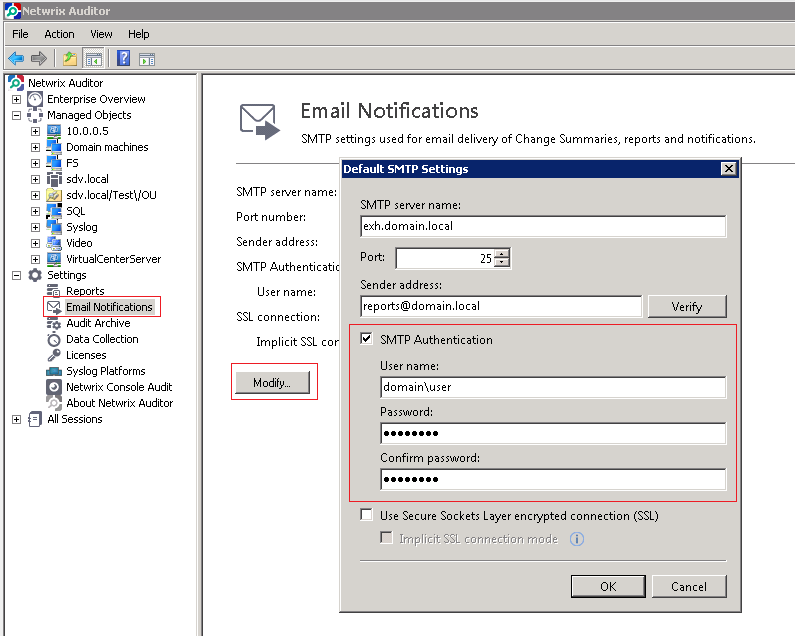
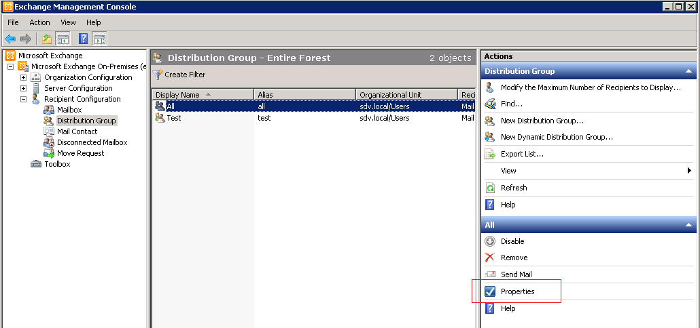
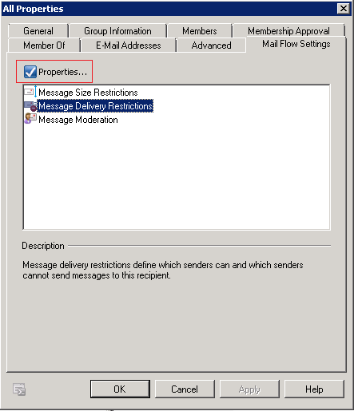
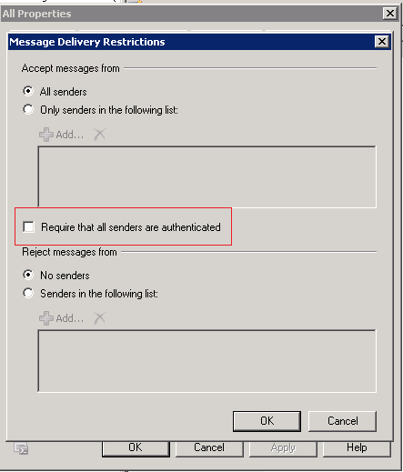

If a user`s e-mail address is specified as a recipient, notifications work. If a
distribution group is specified as the recipient, notifications do not come through
This is related to authentication settings. By default, even if the Exchange receive connector accepts anonymous SMTP, sending to distribution groups requires clients to be authenticated.
There are two solutions:
This is related to authentication settings. By default, even if the Exchange receive connector accepts anonymous SMTP, sending to distribution groups requires clients to be authenticated.
There are two solutions:
- Configure SMTP authentication in the settings of the Netwrix Management console

- Disable "require authentication" option in distribution group options as follows
- Launch Exchange Management console
- Navigate to MS Exchange - Recipient configuration - Distribution groups
- Select the required distribution group and open its Properties

- Go to Mail Flow Setting tab
- Select Message Delivery Restrictions from the list and open its Properties

- Uncheck Require that all senders are authenticated and click OK

Alternatively you can run the following command via Exchange Management Shell:Set-Mailbox -RequireSenderAuthenticationEnabled $false -Identity %group%,
where %group% is like dynamic.group@example.com